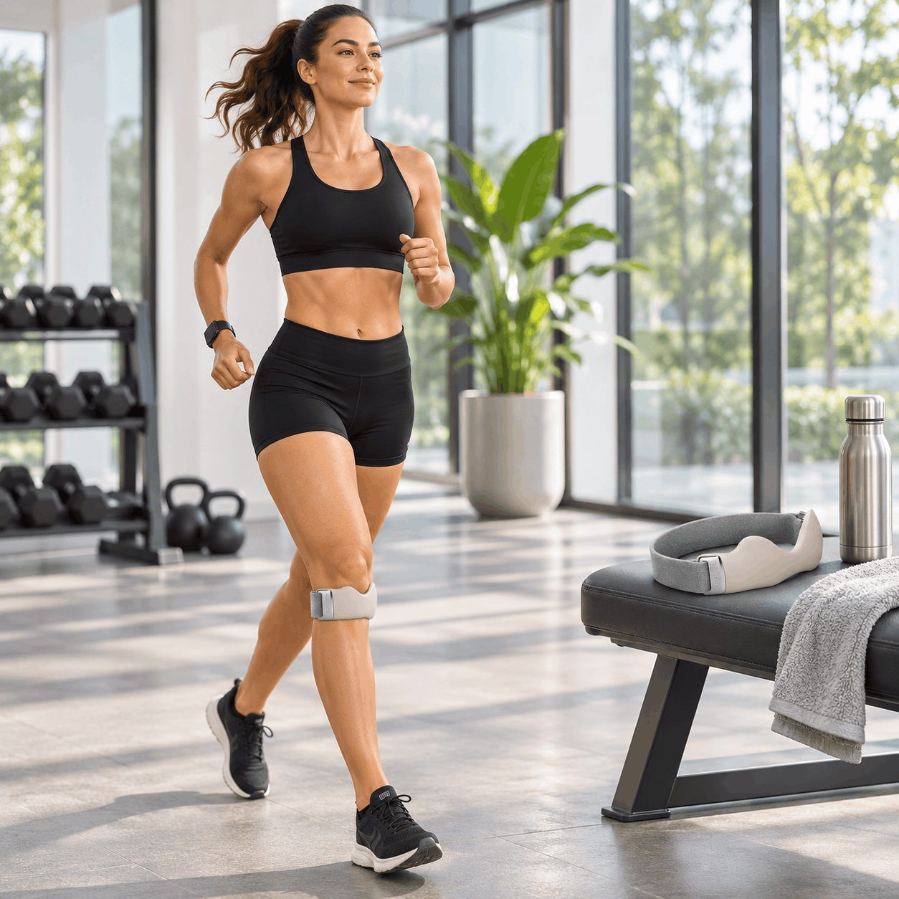

Bandă de Susținere Rotulă pentru Genunchi, Gri
Bandă de susținere rotulă pentru genunchi, cu suport anatomic din silicon și curea reglabilă, pentru compresie localizată în timpul activităților sportive.
Prețul și stocul sunt afișate conform catalogului furnizat. Confirmă disponibilitatea, cantitatea și condițiile comerciale înainte de comandă.
DETALII PRODUS
Descriere
Banda de susținere rotuliană pentru genunchi, cu element de sprijin din silicon și sistem de fixare reglabil, este un accesoriu ergonomic conceput pentru aplicarea unei presiuni localizate în regiunea situată imediat sub rotulă. Datorită designului compact și construcției adaptate formei genunchiului, produsul oferă susținere suplimentară în timpul mișcărilor cotidiene și al activităților fizice.
Spre deosebire de genunchierele clasice, care acoperă o suprafață extinsă a articulației, acest model utilizează o bandă îngustă cu suport frontal profilat, permițând menținerea unei libertăți ridicate de mișcare și ajustarea individuală a fixării.
1. Susținere localizată în zona tendonului rotulian
Principalul element funcțional al produsului este suportul anatomic din silicon, proiectat pentru poziționarea sub rotulă, în regiunea tendonului rotulian.
Forma sa curbată urmărește conturul natural al genunchiului și permite distribuirea contactului pe zona susținută.
Prin aplicarea unei compresii ajustabile, banda poate contribui la stabilizarea locală și la susținerea tendonului rotulian în timpul activităților care implică flexia și extensia genunchiului.
Acest tip de accesoriu poate fi utilizat pentru susținere suplimentară în timpul mersului, alergării sau exercițiilor fizice, în funcție de necesitățile individuale.
2. Design compact pentru libertate de mișcare
Construcția deschisă reprezintă unul dintre avantajele distinctive ale benzii rotuliene, deoarece nu necesită acoperirea completă a genunchiului.
Produsul se poziționează în partea inferioară a rotulei, lăsând descoperite zonele superioare și laterale ale articulației.
Această configurație prezintă mai multe beneficii practice:
- Permite îndoirea și întinderea genunchiului.
- Oferă susținere localizată fără utilizarea unei genunchiere complete.
- Facilitează integrarea în activități sportive și recreative.
- Are un profil compact, potrivit pentru transport și depozitare.
- Poate fi aplicată și îndepărtată fără proceduri complicate.
3. Sistem reglabil pentru fixare individuală
Banda este prevăzută cu o curea textilă reglabilă, care permite adaptarea circumferinței de fixare în funcție de dimensiunile genunchiului.
Materialul flexibil al curelei facilitează poziționarea suportului, iar sistemul de prindere contribuie la menținerea produsului în zona dorită.
Elementul frontal profilat este conceput pentru contactul cu regiunea de sub rotulă, în timp ce banda posterioară asigură fixarea în jurul piciorului.
Gradul de strângere trebuie ajustat astfel încât produsul să ofere susținere confortabilă, fără presiune excesivă sau restricționarea circulației.
4. Combinație de materiale pentru confort și funcționalitate
Produsul combină un element frontal din silicon cu o bandă textilă flexibilă, realizând un sistem de susținere care se adaptează conturului membrului inferior.
Elementul din silicon prezintă o formă anatomică, cu profil curbat și margini rotunjite, concepută pentru a urmări zona de contact.
Cureaua textilă permite ajustarea poziției și a nivelului de strângere, contribuind la fixarea produsului în timpul mișcărilor obișnuite.
Aspectul exterior este caracterizat de o combinație discretă de gri și bej, potrivită pentru accesoriile sportive și de susținere articulară.
5. Recomandată pentru diferite tipuri de activități
Banda de susținere rotuliană poate fi integrată în activități care presupun solicitarea repetată a genunchilor, atunci când utilizarea unui suport localizat este adecvată.
Exemple de utilizare:
- Alergare și jogging: pentru susținere suplimentară în zona tendonului rotulian.
- Fitness și antrenamente în sală: în cadrul exercițiilor compatibile cu utilizarea benzii.
- Mers și activități recreative: pentru persoanele care preferă un suport compact.
- Exerciții de mobilitate: atunci când este recomandată susținerea localizată a genunchiului.
- Activități cotidiene: pentru utilizarea în situații care necesită un accesoriu de stabilizare ușoară.
Produsul nu este destinat imobilizării articulației și nu înlocuiește dispozitivele ortopedice recomandate pentru leziuni care necesită stabilizare rigidă.
6. Caracteristici și specificații ale produsului
- Denumire produs: bandă de susținere rotuliană pentru genunchi.
- Tip accesoriu: suport patelar cu fixare reglabilă.
- Zonă de aplicare: partea inferioară a rotulei.
- Funcție principală: susținere și compresie localizată.
- Element frontal: suport anatomic din silicon.
- Formă suport: curbată, adaptată regiunii subrotuliene.
- Material curea: material textil flexibil.
- Sistem de fixare: bandă reglabilă.
- Nivel de ajustare: individual, în funcție de circumferința piciorului.
- Design: compact, cu profil ergonomic.
- Acoperire: localizată, fără învelirea completă a genunchiului.
- Libertate de mișcare: permite flexia și extensia genunchiului.
- Culoare: gri și bej.
- Utilizare: sportivă și cotidiană.
- Activități compatibile: mers, alergare, fitness și exerciții fizice adecvate.
- Aplicare: poziționare sub rotulă și fixare în jurul piciorului.
- Îndepărtare: prin desfacerea sistemului de prindere.
- Întreținere: conform recomandărilor producătorului.
- Alimentare electrică: nu necesită.
- Caracter reutilizabil: concepută pentru utilizări repetate, cu respectarea instrucțiunilor de întreținere.
Comandă și informații
Site-ul funcționează în regim de catalog B2B. Nu există plată online sau coș de cumpărături.
Discută pe WhatsApp →DIN ACEEAȘI CATEGORIE